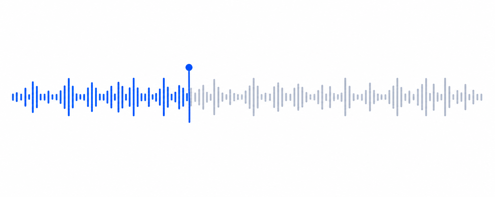

We should be able to review the recording and export the transcript after correction.
meeting-recording.mp4
Ready
Recognized text
Your transcript will appear here
Start transcription to see the result here.
meeting-recording.mp4
Processing
Transcribing recording
 Loading model
Loading model- Extracting audio
- Transcribing
 Post-processing
Post-processing
Transcribing
62%
Elapsed 01:42Estimated total 03:10
meeting-recording.mp4
Complete
Transcript playback
00:06/ 02:14

Yes, keep the result editable and easy to scan.